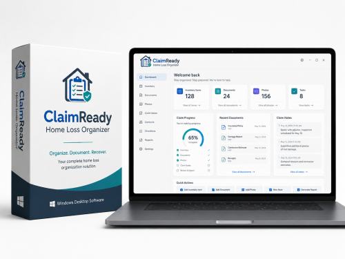

ClaimReady Home Loss Organizer – Windows Software
Product profile · Marketplace data 2026-10-09 · Sales-page research 2026-10-09 · Categories: Software

Marketplace record
| Product type | Software |
|---|---|
| Price | $32.44 (Single payment) |
| Affiliate commission | 40% |
| Refund window | Per the vendor's sales page — check the official page before buying |
| Vendor | EnricoLanciani (listed since 2026-05-24) |
| Marketplace stats* | Cart conversion — · cancel rate — · affiliate earnings/sale $12.98 |
* Vendor-side marketplace statistics reported by Digistore24; they depend on traffic quality and are not a forecast.
Vendor's marketplace description
ClaimReady Home Loss Organizer is a downloadable Windows software tool designed to help users organize property loss information, photos, documents, repair quotes, notes, contacts and claim-related records in one structured place. The product helps users keep important information related to a home loss or damage event more organized and easier to review. Benefits for affiliates:- Digital download…
From the vendor's sales page
Page title: ClaimReady Home Loss Organizer | NexiloLab
Meta description: Offline Windows desktop software to help homeowners organize property damage information, photos, documents, repair quotes, communications, and claim-related notes.
Headline
ClaimReady Home Loss Organizer
Section headlines
- What ClaimReady helps you organize
- Who it is for
- What you receive
- Organize your home loss information before it becomes overwhelming
Opening copy
Organize property damage information, documents, photos, repair quotes, communications, and claim-related notes in one structured place.
ClaimReady Home Loss Organizer is an offline Windows desktop software designed to help homeowners document and organize important information after a home damage event or property loss.
It helps you keep documents, photos, repair estimates, contacts, notes, and report information structured before discussions with insurance, repair professionals, or other involved parties.
CTA buttons: “Get instant access” · “Get ClaimReady Home Loss Organizer”
Research method: raw HTML fetch · 404 words on page · quality: rich · researched 2026-10-09. Full research file (MD) ↗
Where to check it out
Read the vendor's full sales page (current price, guarantee terms and bonuses are listed there):
View official sales page
That link is an affiliate link — if you buy through it we earn a commission from the vendor at no extra cost to you.